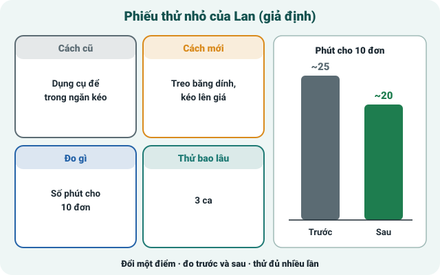

K4 · Sáng tạo và cải tiến › Bậc 2 Bắt đầu
Thử một cách làm mới nhỏ và ghi lại kết quả
Bài Bậc 2 (Bắt đầu). Ở Bậc 3, bạn sẽ viết đề xuất cải tiến 1 trang: Viết đề xuất cải tiến nhỏ.
1. Mục tiêu
- Lập phiếu thử nhỏ: cách cũ, cách mới, đo gì, thử bao lâu.
- Ghi góp ý cải tiến kèm lý do và kết quả thử.
2. Khởi động truy xuất
- Bốn bước làm quen cách làm mới là gì?
- Khi được góp ý, 3 bước phản hồi là gì?
Đáp án
- Hỏi lý do; tìm điểm khác; thử ở việc ít rủi ro; ghi chỗ vướng.
- Nghe hết, cảm ơn; hỏi rõ một điểm; sửa và làm tiếp.
Xem lại: Làm quen công cụ, quy trình mới.
3. Giải thích
Ở Bậc 1, bạn tập nêu ý tưởng. Ở Bậc 2, bạn tập thử ý tưởng đó, ở quy mô thật nhỏ. Thử rồi mới biết ý tưởng có giúp được không.
Thử nhỏ là thử trong phạm vi việc của mình. Ví dụ: đổi cách sắp đồ trên bàn làm việc của bạn. Không phải đổi quy trình của cả cửa hàng. Việc ảnh hưởng người khác, hoặc liên quan an toàn, tiền bạc, phải hỏi người phụ trách trước.
Phiếu thử nhỏ có 4 ô:
Phiếu thử nhỏ
- Cách cũĐang làm thế nào. Kết quả hiện nay ra sao.
- Cách mớiĐổi đúng một điểm. Viết cụ thể.
- Đo gìMột con số dễ đếm: phút, số lỗi, số lần phải đi lại.
- Thử bao lâuĐủ vài lần để không phải do may rủi, như 3 ca hay 1 tuần.
Vì sao chỉ đổi một điểm? Đổi nhiều thứ cùng lúc thì không biết điều gì tạo ra khác biệt. Cách này bạn đã gặp ở bài K6 Bậc 1.
Vì sao đo cả cách cũ? Không có con số của cách cũ thì không so được. "Có vẻ nhanh hơn" chưa đủ. "Từ 12 phút còn 8 phút" thì rõ.
Ghi góp ý kèm lý do. Sau khi thử, viết 3 dòng:
- Đã thử gì, bao lâu.
- Kết quả: con số trước và sau.
- Đề xuất: giữ, bỏ, hay thử tiếp với thay đổi khác.
Kết quả không tốt cũng có giá trị. Bạn biết cách đó không giúp, và tiết kiệm thời gian cho người khác.
Học mẹo của đồng nghiệp. Nhiều ý tưởng tốt nhất đến từ người làm lâu. Khi thấy ai làm nhanh hơn, hỏi: "Anh làm thế nào vậy?" Rồi đưa mẹo đó vào phiếu thử của bạn.
4. Ví dụ tại nơi làm việc Việt Nam
Tình huống giả định. Lan làm thêm ở quầy đóng gói của một cửa hàng online bán phụ kiện điện thoại. Lan thấy mình mất thời gian tìm băng dính và kéo.
Phiếu thử của Lan:
Cách cũ: băng dính, kéo để chung trong ngăn kéo. Đếm 3 ca: trung bình 10 đơn mất khoảng 25 phút.
Cách mới: treo băng dính và kéo trên giá ngay trước mặt. Học từ chị Hằng ở quầy bên.
Đo gì: số phút cho 10 đơn.
Thử bao lâu: 3 ca.
Kết quả: trung bình còn khoảng 20 phút cho 10 đơn. Lan ghi góp ý gửi chị quản lý: "Em thử treo dụng cụ lên giá 3 ca. 10 đơn từ khoảng 25 phút còn khoảng 20 phút. Em đề xuất làm giá cho cả 3 quầy."
(Số liệu là giả định để minh họa.)

Vì sao cách này tốt: Lan đổi một điểm, đo trước và sau, thử đủ 3 ca, và ghi góp ý có số liệu.
5. Thực hành
Tình huống giả định. Bạn là sinh viên làm thêm trực quầy thư viện trường. Mỗi lần sinh viên hỏi giờ mở cửa và cách mượn sách, bạn phải giải thích lại từ đầu.
Lập phiếu thử nhỏ 4 ô.
Gợi ý 1
Cách mới có thể là một tờ giấy, một bảng nhỏ, hoặc một mã QR. Chọn một thứ thôi.
Gợi ý 2
Đo gì: số lần phải giải thích trong một ca, hoặc số phút giải thích.
Lời giải mẫu
Cách cũ: giải thích miệng. Đếm 2 ca: mỗi ca khoảng 15 lần hỏi.
Cách mới: đặt một tấm bảng nhỏ ghi giờ mở cửa và 3 bước mượn sách ở quầy. Xin phép thủ thư trước.
Đo gì: số lần sinh viên hỏi lại những câu này trong một ca.
Thử bao lâu: 1 tuần.
6. Tự kiểm tra
Chọn đáp án. Mỗi lựa chọn đều có giải thích.
Câu 1. Việc nào phù hợp để tự thử nhỏ mà chưa cần hỏi ai?
-
Đúng. Đúng. Việc nằm trong phạm vi của bạn, không ảnh hưởng người khác.
-
Chưa đúng. Liên quan tiền và khách hàng, phải hỏi người phụ trách trước.
-
Chưa đúng. Liên quan an toàn. Tuyệt đối không tự thay đổi.
Câu 2. Bạn đổi cả cách xếp hàng, đổi giờ nghỉ và đổi dụng cụ cùng lúc. Vấn đề là gì?
-
Chưa đúng. Đổi nhiều thứ cùng lúc thì không biết điều gì tạo ra khác biệt.
-
Đúng. Đúng. Mỗi lần thử chỉ nên đổi một điểm.
-
Chưa đúng. Vấn đề chính không phải thời gian mà là đổi nhiều thứ một lúc.
Câu 3. Ô "Đo gì" nên ghi thế nào?
-
Chưa đúng. Quá chung chung, không so được trước và sau.
-
Đúng. Đúng. Một con số dễ đếm, đo được cả trước và sau.
-
Chưa đúng. Cảm giác khó đo. Cần một con số cụ thể.
Câu 4. Bạn thử cách mới 1 tuần nhưng kết quả không tốt hơn. Bạn nên làm gì?
-
Chưa đúng. Kết quả không tốt vẫn có giá trị cho người khác.
-
Đúng. Đúng. Biết cách nào không giúp cũng tiết kiệm thời gian cho cả nhóm.
-
Chưa đúng. Báo sai kết quả làm người khác ra quyết định sai.
7. Phản tư
- Việc nào bạn làm hằng ngày có thể đo bằng một con số dễ đếm?
- Đồng nghiệp hay bạn bè nào làm một việc nhanh hơn bạn? Họ có mẹo gì?
8. Áp dụng thật
Trong 7 ngày tới, lập một phiếu thử nhỏ cho việc của chính bạn. Đo cách cũ ít nhất 3 lần, rồi thử cách mới cùng số lần. Ghi 3 dòng kết quả và đề xuất.
9. Siêu dữ liệu
| skill | K4 · Sáng tạo và cải tiến |
|---|---|
| level | Bậc 2 · Bắt đầu |
| group | N2, N3 |
| framework_map | WEF: Creative thinking; CSfW: 3d Create and innovate; SkillsFuture CCS: Creative Thinking; EntreComp: Creativity; Learning through experience (chỉ dẫn chiếu) |
| updated | 2026-11-14 |
Hoàn thành bài
Đánh dấu đã học để site gợi ý lịch ôn sau 1, 3 và 7 ngày. Dữ liệu chỉ lưu trên máy của bạn.
Lịch ôn gợi ý: